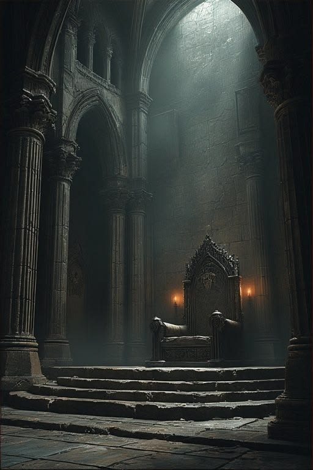

You stand in the throne room alone.
The Usurper is defeated. The crown is yours again. But the hall around you is silent in a way that has nothing to do with the dead — it is the silence of people who are watching, uncertain, unsure what kind of king has just emerged from this battle.
You fought without support, or outlasted every one of them. That is remarkable. That is also frightening, to those who are only now starting to wonder: what does a king who needs no one actually need them for?
You feel the skepticism in the court. You've earned your throne by force alone, and force alone is what you understand it requires to keep it.
You rule. Decisively. Without apology. Every whisper of rebellion is met with swift response. Every doubt about your legitimacy is answered with action, not words. The people do not love you — not yet, perhaps not ever — but they do not move against you either.
The kingdom is stable. Whether it is whole is another question.
You won the crown alone. Now you carry it alone.
